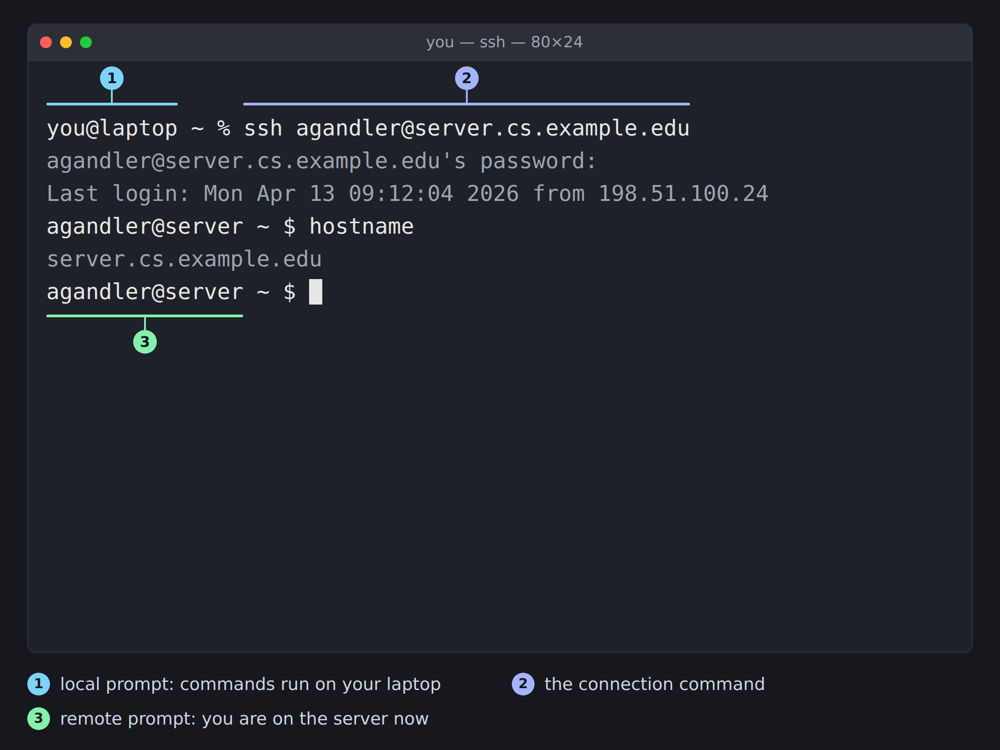

13 Remote Computing
Prerequisites (read first if unfamiliar): Chapter 11.
See also: Chapter 31, Chapter 33, Chapter 32.
Purpose
It usually starts with a laptop that isn’t big enough. Your dataset won’t fit in memory, or a model needs six hours and a GPU you don’t have, or your advisor forwards an email that says, more or less in full, “Your cluster account is ready: ssh agandler@server.cs.example.edu.” You open a terminal at your kitchen table, paste the command, and wait. After a long pause you get Operation timed out. Nothing in that message tells you the server only answers computers on the campus network, and that you needed to connect the VPN first.
If that’s where you are, you’re in good company. Remote computing is full of steps everyone seems to know already, and its error messages often point at the wrong problem. None of it is hard once you can see the pieces: a program on your laptop, a program on the other computer, the network in between, and a key that proves you are you. The same few commands then get you into a department server, a research cluster, a lab workstation, or a rented cloud machine.
This chapter covers SSH and keys, moving files, tunnels to a remote Jupyter, VPNs, keeping long jobs alive, a first cloud machine without a surprise bill, and diagnosing what goes wrong. It doesn’t teach you to run a server for other people, and it can’t replace your own cluster’s documentation, which has the local details you’ll need. It assumes you’re comfortable at a command prompt (Chapter 11).
Why read this chapter
- You typed the
sshcommand your instructor gave you, gotOperation timed out, and can’t tell whether the problem is you, your Wi-Fi, or the server. - A job ran for four hours on a server, your laptop went to sleep, and when you reconnected the job was gone.
- You type the same long hostname and password twenty times a day and suspect there’s a better way (there is: a key and a short
~/.ssh/configentry). - You tried to copy a folder with
scpand gotnot a regular file, orrsyncput your data inraw/raw/. - The data and the GPU are on the server, you want Jupyter in your own browser, and
ssh -L 8888:localhost:8888looks like a secret code. - SSH just printed
WARNING: REMOTE HOST IDENTIFICATION HAS CHANGED!in a box of@signs, and you don’t know whether to panic or to delete something. - You’re about to create a cloud server for a class project and you’ve heard the stories about surprise bills.
Running theme: remote access is powerful, so make it boring
The goal isn’t cleverness. It’s a routine that works the same way every time, so the power you have on someone else’s computer never turns into a mistake you can’t undo.
13.1 A beginner mental model
The vocabulary sounds more technical than the ideas behind it. Your local machine is the laptop or desktop in front of you, the one whose keyboard you can touch. A remote machine is any other computer you reach over a network: a university server, the login node of a research cluster, a virtual machine in the cloud, a workstation in a lab. The network is whatever path connects the two, whether that’s campus Wi-Fi, your home internet, the public internet, or all three in a row.
Nearly every tool in this chapter follows the client–server model. The client is the program you run locally to start a connection (an SSH client, a VPN client, a web browser), and the server is the program on the other end, waiting for connections to arrive. A protocol such as SSH or HTTPS is the set of rules the two halves use to talk. Once you have that picture, each tool here is a variation on one sentence: run a client on your laptop that talks to a server somewhere else.
Two consequences trip up almost everyone at first. The first is that the remote machine really is a different computer, with its own files, its own users, and its own software. A file at ~/data/sales.csv on the server is not the file at the same path on your laptop, and having pandas installed on your laptop tells you nothing about whether the server has it. The second is that an SSH session is a connection plus a shell. When the connection ends, the shell ends, and anything you started in it usually ends too, unless you took steps to keep it alive (“Keep long jobs alive” below shows how).
So why put up with the extra moving parts? For resources: more memory, more cores, more disk, or a GPU. For shared data and licensed software that are too big, too sensitive, or too expensive to copy to every laptop. For reliability, since a server runs all night while your laptop closes its lid. And for collaboration: when a team works in one shared environment, everyone runs the same code on the same data with the same library versions, and a whole category of “works on my machine” bugs disappears.
13.2 Before you connect
Remote computing is one of the few places in this book where a small slip can leak a credential, expose someone’s data, or run up a real bill, so the best time to build careful habits is before you have the power to break anything.
What you need to know
To connect to any remote machine you need three facts: your username there (often not your laptop’s), the host address (a name like server.cs.example.edu or an IP address like 203.0.113.42), and an authentication method the server accepts, usually a password or an SSH key, often with multi-factor authentication (MFA) on top. When you have a choice, prefer your institutional login with MFA plus an SSH key: the account can be shut off in one place if it’s compromised, a stolen password alone isn’t enough, and a key is both safer and less annoying than a password.
Write the facts down the first time someone tells you, because you won’t remember them in March:
# Remote: cs.example.edu research cluster
hostname: server.cs.example.edu
port: 22 (default)
username: agandler
auth: SSH key (~/.ssh/id_ed25519) + Duo MFA
vpn: required from off-campus (CiscoSecureClient → "cs.example.edu")Keep that note somewhere private that you can find again. An ssh_notes.md in your own notes folder or private repository is fine; a public GitHub gist is not.
Finding SSH on your computer
Good news: you almost certainly have SSH already. On macOS, Terminal comes with ssh, scp, and sftp installed; type which ssh and it prints /usr/bin/ssh. On Linux, the same tools come with nearly every distribution, and on the rare one that lacks them, sudo apt install openssh-client (Debian and Ubuntu) or your distribution’s equivalent adds them.
On Windows, Windows 10 (version 1809 and later) and Windows 11 include Microsoft’s build of OpenSSH, which you use from PowerShell or Command Prompt. Check that it’s there:
Get-Command ssh
# Should print a path like C:\Windows\System32\OpenSSH\ssh.exeIf PowerShell can’t find it, click Start, search for “Optional features”, choose to add a feature, and install OpenSSH Client; Microsoft’s getting-started page has screenshots for each version of Windows. For a nicer place to work, use Windows Terminal (free from the Microsoft Store if it isn’t already installed) or the Windows Subsystem for Linux (WSL), which gives you a real Linux environment, including rsync, on the same machine (see Chapter 11).
It’s also worth installing an editor that can work on remote files, such as VS Code with its Remote - SSH extension (“Working in your editor” below).
A few rules before you have any power
Never share a password or a private key, not with a project partner, a TA, or someone claiming to be tech support; nobody legitimate will ask. A private SSH key is like a house key: whoever has a copy can be you on every server that trusts it.
Keep secrets out of commands and chats, and assume your history is readable. Your shell saves every command in a history file (~/.bash_history or ~/.zsh_history), a chat message sits on someone else’s server, and on a shared machine the administrators can see more than you might think. If a program needs a password, let it prompt you (in bash, read -s PASSWORD reads one without echoing it) or load it from a .env file (see Chapter 34); never type it on the command line.
Use the least access you need, and log out when you’re done. Don’t live as root on a machine where you can use sudo (“Least privilege” below explains why), and close sessions with exit or Ctrl+D when you finish.
13.3 SSH: the front door
SSH (Secure Shell) is how you get into almost every Unix-like server. It does three jobs, all encrypted: it gives you a shell on the remote machine, it carries files in and out, and it can tunnel other network traffic through the same connection. Those are one protocol with three command-line shapes, which is why learning SSH pays off so quickly. The ssh manual page is the authority on every option below.
The first connection
The command you’ll type most is:
ssh username@hostnameFor example, ssh agandler@server.cs.example.edu.
The prompt is what tells you the connection worked. Before you run ssh it names your own machine; afterwards it names the server, and every command you type from that point runs there rather than on your laptop (Figure 13.1).

The common failures each point at a different layer. Operation timed out (Connection timed out on Linux) means your packets never got an answer: you may need the VPN, or a firewall is in the way. Connection refused means the machine answered but nothing is listening on that port, so check the port number. Could not resolve hostname means the name itself couldn’t be looked up; check the spelling, and if it’s an internal name, connect the VPN. Permission denied (publickey) means you reached the server fine and it rejected your credentials. Host key verification failed means the server’s identity changed since your last visit; don’t just delete the old entry until you know why.
For any of them, ssh -v username@hostname prints each step of the connection, so you can see which one fails. “When things go wrong” below walks through each case, and Chapter 2 helps if you need to write to your IT department.
If the server runs SSH on a port other than the default 22 (some institutions do), add -p:
ssh -p 2222 username@hostnameThe first time you connect to a server, SSH stops and asks something like this:
The authenticity of host 'server.cs.example.edu (198.51.100.17)' can't be established.
ED25519 key fingerprint is SHA256:3xAmPLeF1nGeRpR1nTnOtArEaLoNe0x2VqKc8sJq7wA.
This key is not known by any other names.
Are you sure you want to continue connecting (yes/no/[fingerprint])?Most people type yes without reading it, so here’s what it’s asking. Every SSH server has a key of its own, and the fingerprint is a short summary of it. SSH has never seen this server, so it can’t tell the real machine from an impostor in between (a man-in-the-middle attack), and it’s asking you to vouch for it. If your instructor or cluster documentation publishes the fingerprint, paste it at the prompt instead of yes and SSH compares the two for you. SSH then saves the key in ~/.ssh/known_hosts and checks it on every later visit, which is where the frightening warning in “When things go wrong” comes from.
Keys instead of passwords
Passwords are how most people start, but they can be guessed and reused, and many managed servers turn them off. Keys are better, and once they’re set up you’ll wonder how you put up with passwords.
A key pair is two files, built on public-key cryptography. The private key stays on your computer and is never shared. The public key is safe to give away: you copy it onto every server you want to log in to. When you connect, the server uses it to check, mathematically, that you hold the matching private key, without the private key ever crossing the network.
Make a pair with ssh-keygen:
ssh-keygen -t ed25519 -C "your.email@example.com"It asks where to save the key (press Enter for ~/.ssh/id_ed25519), then for a passphrase, twice. Pick a real one: it encrypts the private key file, so someone who copies it off a lost laptop still can’t use it. You end up with two files:
-rw------- 1 you you 464 Sep 25 15:51 id_ed25519
-rw-r--r-- 1 you you 104 Sep 25 15:51 id_ed25519.pubThe .pub file is the public key; the one with no extension is the private key. Mixing them up is the classic beginner mistake, so repeat it whenever you copy a key anywhere: only the .pub file ever leaves your computer.
Next, install the public key on the server, as one line in ~/.ssh/authorized_keys in your account there. On macOS and Linux, ssh-copy-id does it, asking for your password one last time:
ssh-copy-id agandler@server.cs.example.eduWindows doesn’t include ssh-copy-id, but two commands in PowerShell do the same job: copy the .pub file over, then append it on the server.
scp $env:USERPROFILE\.ssh\id_ed25519.pub agandler@server.cs.example.edu:
ssh agandler@server.cs.example.edu "mkdir -p ~/.ssh && chmod 700 ~/.ssh && cat id_ed25519.pub >> ~/.ssh/authorized_keys && chmod 600 ~/.ssh/authorized_keys && rm id_ed25519.pub"If your cluster’s documentation describes a different way (some have you paste the key into a web page), follow it. Cloud providers ask for the public key when you create a machine.
Let the agent remember your passphrase
Typing a passphrase on every connection gets old fast. ssh-agent is a background program that holds your unlocked key so you type it once per session. macOS and most Linux desktops start one for you; on Windows it’s a service that’s turned off by default, and Microsoft’s page shows how to switch it on. ssh-add -l lists the keys the agent holds (The agent has no identities. means none), and ssh-add ~/.ssh/id_ed25519 adds yours. The AddKeysToAgent setting below does that automatically.
You’ll see advice to turn on agent forwarding (ssh -A), which lets a server use your agent to hop onward to a third machine. Leave it off unless you need it: the manual warns that anyone who can get around file permissions on that server can use your agent to log in elsewhere as you while you’re connected. ProxyJump (next) is the safer way to hop.
Nicknames: ~/.ssh/config
Typing ssh -i ~/.ssh/id_ed25519 agandler@server.cs.example.edu all day is the kind of friction that makes people skip good habits. ~/.ssh/config gives each server a short nickname and stores its settings once:
# ~/.ssh/config
Host cluster
HostName server.cs.example.edu
User agandler
IdentityFile ~/.ssh/id_ed25519
Host inside
HostName compute07.cs.example.edu
User agandler
ProxyJump cluster
Host *
AddKeysToAgent yes
ServerAliveInterval 60
ServerAliveCountMax 3Now ssh cluster does the same as the long command, and the nickname works everywhere SSH does: scp results.csv cluster:, rsync, and VS Code’s list of hosts. ProxyJump handles a machine you can only reach through another one (a jump host): ssh inside connects to cluster first and hops from there. The Host * block applies to every host; its last two lines keep idle connections alive (“Connections that keep dropping” below).
Two snags catch people. SSH uses the first value it finds for each setting, so a Host * block at the top overrides everything below it; the ssh_config manual says to put specific hosts first and defaults last. And the file must not be writable by anyone but you, or SSH stops with Bad owner or permissions on /Users/you/.ssh/config (chmod 600 ~/.ssh/config fixes it). When a nickname misbehaves, ssh -G cluster prints every setting SSH would use, without connecting.
13.4 Moving files in and out
After logging in, moving files is what you’ll do most. SSH gives you three tools, scp, sftp, and rsync, each best at one job, and all sharing one idea that confuses nearly everyone at first.
Which side is which?
Every transfer involves two paths, and the easy mistake is losing track of which one is on your laptop. A path with a username@hostname: prefix is on the remote machine: the colon says “the other side.” A path without one is local, even if it looks like a server path.
data/raw/sales.csv ← local path
/home/agandler/projects/sales/data/raw/sales.csv ← also local: no prefix
agandler@server.cs.example.edu:~/projects/sales/data/ ← remote path (note the :)A remote path that doesn’t start with / or ~ is relative to your home directory on the server. That’s convenient, and it’s also why people end up asking “where did my file land?” Until the syntax feels natural, write absolute paths on both sides and run ls afterwards to check.
scp: a quick copy
scp works like cp: source first, destination second, and either side can be remote.
# Upload a file to the server
scp report.pdf agandler@server.cs.example.edu:~/deliverables/
# Download a file from the server into the current folder
scp agandler@server.cs.example.edu:~/results/summary.csv ./
# Upload a whole folder (note the -r)
scp -r data/raw/ agandler@server.cs.example.edu:~/projects/sales/data/
# A non-default port: capital -P for scp, lowercase -p for ssh
scp -P 2222 file.txt user@host:~/Forget the -r on a folder and scp stops with local "data/raw" is not a regular file, its way of saying “that’s a folder.” Spaces in names are the other snag, and the advice online is out of date. Older scp ran remote paths through the server’s shell, so you had to quote them twice. Since OpenSSH 9.0 (2022), scp uses the SFTP protocol underneath, ordinary quoting is enough, and the old double-escaped form fails:
scp "report draft.pdf" "agandler@server.cs.example.edu:Dropped Reports/"scp is ideal for quick copies and scripts. To look around first, or to move a lot of data, use one of the next two.
sftp: look around, then transfer
sftp opens an interactive session, a bit like a file browser you drive by typing. Inside it, cd and ls move around the server, lcd and lls do the same on your laptop, put uploads, and get downloads:
$ sftp agandler@server.cs.example.edu
Connected to server.cs.example.edu.
sftp> cd projects/sales
sftp> ls
README.md data notebooks src
sftp> lcd ~/Downloads
sftp> put new_data.csv data/raw/
Uploading new_data.csv to /home/agandler/projects/sales/data/raw/new_data.csv
sftp> get notebooks/results.ipynb
Fetching /home/agandler/projects/sales/notebooks/results.ipynb to results.ipynb
sftp> bye(In a real terminal each transfer also draws a progress bar.) If a big download dies halfway, reget resumes it, and reput does the same for uploads. SFTP is also what graphical programs such as Cyberduck, WinSCP, and FileZilla speak underneath, if you’d rather drag and drop between side-by-side panes.
rsync: big or repeated transfers
For more than a handful of files, or anything you’ll copy twice, use rsync. It sends only what changed, so a second run takes seconds, and with -P it keeps partly sent files so an interrupted transfer can resume, and shows progress.
# Preview first: -n (--dry-run) lists what would be sent, and sends nothing
rsync -avzPn data/raw/ agandler@server.cs.example.edu:~/projects/sales/data/raw/
# Then do it for real
rsync -avzP data/raw/ agandler@server.cs.example.edu:~/projects/sales/data/raw/
# -a archive: recurse into folders, keep permissions and timestamps
# -v verbose: list each file
# -z compress while sending
# -P keep partial files and show progress (--partial --progress)The trailing slash on the source is the part that bites. data/raw/ (with a slash) copies the contents of raw; data/raw (without) copies the folder itself, and your files end up in ~/projects/sales/data/raw/raw/. The dry run shows the paths before anything moves, which is exactly what it’s for.
rsync must be installed on both machines; if the server lacks it, you’ll get an error saying rsync wasn’t found, and scp -r is the fallback. Windows doesn’t include rsync, so Windows users run it from WSL.
Habits that will cost you
Don’t email datasets: attachments are size-capped, and every mail server along the way keeps a copy. Don’t copy restricted data into personal cloud storage. If your data comes with rules (student records, health data, an IRB protocol, a data use agreement), a personal Google Drive or Dropbox is very likely a violation, so ask your instructor or data steward before the upload. Don’t fill a shared home directory. Shared servers have quotas, and a surprise 40 GB will earn you an email from the admins; ask where large data belongs (many clusters have separate scratch or project space).
13.5 Tunnels: reaching services that only listen to themselves
Here’s a situation that confuses a lot of people. You start Jupyter on the server, it prints a URL like http://127.0.0.1:8888/..., you paste it into your laptop’s browser, and nothing loads. The trouble is that 127.0.0.1 is localhost, which always means “this same machine”: on your laptop, that’s your laptop, where nothing is running on port 8888.
Jupyter, databases, and dashboards often listen only on localhost on purpose, so nobody else on the network can reach them. An SSH tunnel (port forwarding) is how you reach them anyway, through your encrypted SSH connection.
Local forwarding, the one you’ll use most
Local forwarding tells SSH “make a port on my laptop lead to a port on the server.” The classic case is Jupyter:
ssh -L 8888:localhost:8888 username@hostnameRead the -L argument left to right: my port 8888 goes to localhost:8888 as seen from the server. That middle localhost means the server’s own localhost, which is the part that trips people up. With the tunnel open, http://localhost:8888 in your laptop’s browser reaches the Jupyter running on the server. If port 8888 is already taken on your laptop (by a local Jupyter, say), SSH complains with bind [127.0.0.1]:8888: Address already in use; pick another local port, as in ssh -L 8899:localhost:8888 username@hostname, and visit http://localhost:8899.
When you want only the tunnel, not a shell, add -N: the terminal then sits holding the tunnel open until you press Ctrl+C. SSH opens your end on your laptop’s localhost only, so others on the café Wi-Fi can’t use it; keep it that way rather than binding to 0.0.0.0. And close tunnels when you’re done, since each is an open, logged-in path.
Remote and dynamic forwarding
You’ll rarely need the other two kinds. Remote forwarding (-R) is the mirror image, making a port on the server lead back to your laptop; it exposes your machine to the server, so use it only for a specific reason. Dynamic forwarding (-D) turns a local port into a SOCKS proxy, so a browser set to use it browses from the server’s network. It’s handy, and it can run into your institution’s network policies, so check them first.
13.6 Working through a VPN
What a VPN does
A virtual private network (VPN) creates an encrypted tunnel from your device to a gateway on another network. At a university, the gateway sits on the campus network, so while the VPN is connected your laptop at home behaves as if it were plugged into a wall jack in the library, and traffic through the tunnel appears to come from the gateway. Under the hood, the VPN client adds a virtual network connection and changes your computer’s routing table, the list that decides which traffic goes where. That’s why a VPN can have side effects that seem unrelated to it.
When you need one
You need the VPN when you’re off campus and want something that only answers campus computers: library databases that check where you connect from, shared drives and network printers, data that an agreement says may be reached only over a managed connection, and above all research servers that deliberately can’t be reached from the public internet. That last one is the usual reason for the Operation timed out in this chapter’s opening. The order matters:
# 1. Connect your institution's VPN client (a GUI app)
# 2. Check that it says "connected" (most show a status icon)
# 3. THEN connect
ssh agandler@cluster.internal.example.eduYour university’s IT pages name the client to install, most often Cisco Secure Client (formerly AnyConnect), GlobalProtect, or OpenVPN. Use that one. A commercial “free VPN” from an app store doesn’t help here, because it connects you to its network, not your university’s.
Common VPN snags
A VPN drop takes your SSH sessions with it. If your Wi-Fi hiccups and the VPN reconnects, every SSH session through it dies, even if the terminal window still looks alive, and a job running in that shell usually dies too. Reconnect the VPN, then SSH again, and run long work where it doesn’t depend on your connection (“Keep long jobs alive” below).
Split and full tunnels behave differently. A full-tunnel VPN sends all your traffic through the university, video calls included, which can be slow. A split-tunnel VPN sends only university traffic through the tunnel. Which you get depends on your institution; if things feel slow or some websites stop working while the VPN is on, check which mode your client uses.
A full tunnel can cut you off from your own home network. Your printer, a Raspberry Pi, or a server running on your laptop can suddenly become unreachable, because every packet goes to the gateway. If something local stops working the moment you connect, that’s almost always why; look for a split-tunnel or “allow local network access” option.
Connect the VPN before anything else, including SSH, file transfers, and your editor’s remote connection; started first, they often fail with a hostname error that never mentions the VPN. And find your client’s status icon and log window the first time you set it up. When something breaks, the log is the first place to look: Authentication failed, Certificate expired, and Server unreachable point at different problems.
13.7 Remote work patterns
Once you can connect and move files, the question becomes how to work on a remote machine day to day. The patterns below cover most of what students meet, and the first habit applies to all of them.
Keep long jobs alive
Everyone learns this one the hard way: you start a three-hour job over SSH, your laptop sleeps, and the job dies with the connection. The fix is to run long work in a session that lives on the server. tmux is the usual tool (screen is an older one that works the same way):
ssh agandler@server.cs.example.edu
tmux new -s work # start a session named "work"
python train.py # start the long job inside it
# Press Ctrl+b, then d, to detach. The job keeps running.
# Log out, close the laptop, go to class.
# Later, from any computer:
ssh agandler@server.cs.example.edu
tmux ls # list sessions
tmux attach -t work # pick up exactly where you left offThe Ctrl+b then d step is two separate key presses: hold Ctrl and press b, let go, then press d. For a job you don’t need to watch at all, nohup (as in nohup python train.py > train.log 2>&1 &) also survives a logout. On a cluster, the better answer is a batch job, next.
Clusters: login node and compute nodes
High-performance computing (HPC) clusters, the kind most research universities run, split the work between a login node and many compute nodes. You SSH into the login node, a modest machine shared by everyone logged in, meant for editing files and submitting jobs. The heavy work runs on compute nodes, handed out by a scheduler; Slurm is the most common, and you may also meet PBS, LSF, or SGE.
The rule that matters most: don’t run heavy work on the login node. One person’s big pandas job there slows everyone to a crawl, and some clusters kill such processes automatically.
Before your first job, you need a Python environment on the cluster, and this is where many first jobs fail. It’s tempting to rsync your laptop’s .venv up with the project. It won’t work. A virtual environment (Chapter 15) isn’t a self-contained copy of Python: it points, by full path, at the Python that built it, and on your laptop that path doesn’t exist on the cluster. The compiled parts of packages such as numpy and pandas are built for one operating system and one Python version (their file names even say so, ...cpython-312-darwin.so on a Mac and ...cpython-312-x86_64-linux-gnu.so on Linux), and a venv made on Windows keeps its scripts in Scripts\, so there’s no bin/activate to source at all. Python’s own documentation says a venv is not movable or copyable: you recreate it where it will run. You can see the pointer in any venv; this one was built on a Linux machine:
$ head -4 .venv/pyvenv.cfg
home = /usr/bin
include-system-site-packages = false
version = 3.12.3
executable = /usr/bin/python3.12So build the venv on the cluster, from the Python the cluster provides. Clusters offer software as environment modules, managed by a tool such as Lmod, and module load puts one particular Python on your PATH. Module names differ from cluster to cluster, so don’t copy one from a tutorial (including this one): run module avail python on your cluster and pick from its list. A short install like this is usually fine on the login node, though some clusters ask you to use an interactive job; your cluster’s documentation says. Compute nodes usually see the same home and project folders as the login node, which is why a venv built there works inside a job:
# On the login node, once per project
module avail python # which Pythons does this cluster offer?
module load python/3.12 # an example name; use one from your cluster's list
which python3 # should be the module's Python, not /usr/bin/python3
cd ~/projects/sales
python3 -m venv .venv
source .venv/bin/activate
python -m pip install -r requirements.txt
deactivateThen write the job script. A typical Slurm workflow:
# SSH into the login node
ssh agandler@cluster.cs.example.edu
# Write a small submission script
cat > run_analysis.sbatch <<'EOF'
#!/bin/bash
#SBATCH --job-name=sales-analysis
#SBATCH --cpus-per-task=8
#SBATCH --mem=16G
#SBATCH --time=02:00:00
#SBATCH --output=logs/%x-%j.out
module load python/3.12 # the same module the venv was built with
source ~/projects/sales/.venv/bin/activate
cd ~/projects/sales
python scripts/analyze.py
EOF
# Slurm won't create the log folder for you
mkdir -p logs
# Submit the job
sbatch run_analysis.sbatch
# → Submitted batch job 12345
# Check on it later (squeue --me works too)
squeue -u agandlerThe #SBATCH lines ask for resources (8 cores, 16 GB of memory, at most two hours); the rest is an ordinary shell script that runs on whichever compute node Slurm assigns. In the log name, %x becomes the job name and %j the job number. The job starts when resources free up, in seconds or hours. The mkdir -p logs line prevents a baffling failure: if the folder named in --output doesn’t exist, the job can fail without leaving any output to explain why. The module load line comes before source for a reason. By default, sbatch hands the job a copy of your login session’s environment, so a job without that line may work today, because you happened to have the module loaded when you submitted, and fail next week when you didn’t. The venv’s python is a link to the module’s Python, which may not even start without the settings module load makes. Load the same module, by the same name, in every job script that uses the venv. Slurm’s quick start guide explains the commands, and your own cluster’s documentation lists the local partitions, accounts, and software modules; read it before your first submission.
Working in your editor
For exploratory work, a remote editor is usually more pleasant: the editor stays on your laptop, where it’s fast, while the files, terminal, and Python run on the server. With VS Code’s Remote - SSH extension (see Further reading), open the Command Palette (F1), choose “Remote-SSH: Connect to Host…”, and pick a host (your ~/.ssh/config nicknames are listed). A new window opens whose file tree, terminal, and interpreter are all on the server.
Local: VS Code window, editor UI
│
│ (SSH connection; VS Code installs a small server program
│ on the remote machine that handles files and terminals)
│
Remote: file tree, terminal, Python runtime, data filesThe older alternative is to edit locally, push to a Git remote (Chapter 31), pull on the server, and run there: slower per edit, but every change is recorded.
Either way, don’t manage files by copying them back and forth by hand. Code lives in version control, data in a documented place on the server, and outputs get regenerated by running code. If you catch yourself dragging analysis_v3_final.py between machines, you’re a week away from “which copy is the real one?”
Remote Jupyter notebooks
Using Jupyter on a server from your laptop’s browser is common enough to get its own section, partly because the naive way is dangerously insecure. The safe way: start Jupyter on the server listening only on localhost, open an SSH tunnel, and browse through the tunnel.
# On the server, inside tmux so it survives a disconnect
jupyter lab --no-browser --ip=127.0.0.1 --port=8888
# On your laptop, in a second terminal
ssh -N -L 8888:localhost:8888 agandler@server.cs.example.edu
# Then open the URL Jupyter printed, which includes ?token=...--ip=127.0.0.1 is the setting that keeps you safe. Access to Jupyter means running arbitrary code as you, so a Jupyter listening on 0.0.0.0 is reachable by anyone on the network, and if its token leaks or has been turned off, they have a shell as you. The token in the URL is the password: keep token URLs out of chats and screenshots.
On a shared server, someone else may already be using port 8888. Jupyter then says The port 8888 is already in use, trying another port. and prints a URL with 8889. Match your tunnel to the port in the URL, or your browser will reach someone else’s server and ask for a token you don’t have. The worked example below walks through a full session.
If your institution runs JupyterHub or a similar service, use that; it handles all of this for you. Hosted platforms such as Google Colab, Kaggle, and GitHub Codespaces skip the server entirely (Chapter 16), and the Jupyter documentation covers the rest.
13.8 Cloud computing basics
What “the cloud” actually is
Cloud computing means renting computers and storage from a provider (Amazon Web Services, Google Cloud, Microsoft Azure, DigitalOcean, and many smaller ones) instead of buying your own. You can rent virtual machines that you SSH into like any server, object storage for big files, managed services such as databases where someone else runs the server, and GPU machines for machine learning.
What sets the cloud apart from a university cluster is how much control you get, and how much responsibility comes with it. On a cluster, administrators install the software and mostly stop you from hurting yourself. On your own cloud account, nobody stands between you and the controls: you can create machines, open firewalls, delete data, and above all spend money, in a few clicks.
The vocabulary, in the order you’ll meet it
The thing you rent is an instance, or virtual machine (VM): you choose its size (cores, memory, disk, GPU), an operating system image, and a location, and it starts in a minute or so. You pay for the time it runs, plus a smaller amount for its disk even while it’s stopped. The location is a region, such as us-east-1 or europe-west2, divided into zones (separate data centers). Pick a region near you and your data, and keep a project in one region, since moving data between regions costs extra.
The instance’s hard drive is an attached disk, which bills for its full size whether you fill it or not. For big files you want to reach from anywhere there’s object storage, organized in buckets (S3 on Amazon, Cloud Storage on Google, Blob Storage on Azure): you upload a file under a name and fetch it by that name. Storing is cheap; downloading costs more than people expect.
Firewall rules, called security groups on AWS, decide what can reach your instance. Open each port (22 for SSH, 443 for HTTPS) to the narrowest range you can, such as your own IP address, not the whole internet. IAM (identity and access management) controls who may do what in your account; for a first VM, its defaults are usually fine.
Cost and risk: the two surprises to avoid
The first surprise is money. Some resources cost money while they merely exist: a stopped VM still bills for its disk, AWS charges for every public IPv4 address in use or not, and a bucket from a semester-old experiment can quietly bill you for a year. The defense is billing alerts, set up on day one. Every major provider lets you set a monthly budget and emails you as you approach it. If you expect to spend five dollars a month, set a $10 budget with alerts at 50%, 80%, and 100%, so you hear about a problem while it’s cheap.
# In the cloud console's billing settings:
Budget: $10/month
Alerts: 50% → email
80% → email
100% → email (and a text, if offered)One catch that surprises nearly everyone: a budget is an alarm, not a brake. As Google’s documentation puts it, setting a budget doesn’t automatically cap usage. The alert tells you; stopping the spending is still your job.
The second surprise is security. A VM with SSH open to the whole internet starts receiving automated login attempts almost as soon as it boots, from bots hunting for weak passwords. If it accepts password logins and one is weak, it can be taken over and put to work for someone else, often mining cryptocurrency on your bill. The defenses are dull and effective: keys instead of passwords, SSH open only to your IP, regular updates, no databases, Jupyter, or web apps exposed to the internet without careful thought, and no credentials left where anyone with a shell could take them. The worked example on cloud VMs puts all of this in order.
13.9 Security habits for remote work
The security habits that work are deliberately boring: small things you do the same way every time.
Key hygiene
Your private SSH key is the most sensitive file on your laptop, so treat it that way. Give it a passphrase. Keep it in ~/.ssh/ and nowhere that syncs or gets shared: not Dropbox, not a GitHub repository (even a private one), not a zip you email yourself. And keep its permissions tight, which ssh-keygen does for you and copying files around can undo:
# Check: only you should be able to read the private key
ls -l ~/.ssh/id_ed25519
# -rw------- ... id_ed25519 ← correct (600)
# Fix it if not
chmod 600 ~/.ssh/id_ed25519
chmod 644 ~/.ssh/id_ed25519.pubIf the permissions are too loose, SSH makes the problem very visible: it prints WARNING: UNPROTECTED PRIVATE KEY FILE!, then Permissions 0644 for '/Users/you/.ssh/id_ed25519' are too open. and This private key will be ignored. The chmod 600 above is the whole fix.
Avoid key sprawl, too: one key per computer for your personal work, and a separate key only for a real reason (a service demands its own, or an employer hands you one). When you retire a computer, remove its public key from the authorized_keys files it was installed in.
If a private key may have leaked (a lost laptop, a key committed to a repository), rotate it right away: make a new pair, install the new public key everywhere the old one worked, remove the old public key from those places, and delete the old private key.
Least privilege
Most machines have an all-powerful account (root on Linux) and a way for trusted users to act as it briefly (sudo). The principle of least privilege says: do normal work as an ordinary user and elevate only for the specific commands that need it, for the same reason you shouldn’t browse the web from a Windows administrator account. An ordinary user can’t wipe out system files by accident or edit other people’s files, and most of the time that’s exactly the protection you want.
# Normal work: run as yourself, with packages in a virtual environment
python analyze.py
python -m pip install some-package # inside an activated .venv
# Elevate only for the specific command that needs it
sudo apt install postgresql
# NOT this:
sudo -i # opening a root shell and living in it(On recent Ubuntu, pip install --user outside a virtual environment is refused with an externally-managed-environment error, which is one more reason to keep a .venv per project; see Chapter 15.)
The same goes for data: if a project needs one table, request read access to that table, not admin rights to the database, and don’t copy sensitive data anywhere with weaker access controls than where it came from. Chapter 34 covers the credentials that grant this access.
Safe networking defaults
On any server you control, start from “almost nothing is reachable” and open ports one at a time. SSH is usually the only thing that needs to be reachable from outside; everything else (a database, Jupyter, a web app in progress) should listen on localhost and be reached through a tunnel, or sit behind a firewall rule that allows only specific addresses.
Good: SSH open to "my IP only"
Jupyter bound to 127.0.0.1, reached via SSH tunnel
Database listening on 127.0.0.1 only
Bad: SSH open to 0.0.0.0/0 (the whole internet)
Jupyter bound to 0.0.0.0 with no password
Database with default admin password exposed publiclyKeep the software patched: on Ubuntu, sudo apt update && sudo apt upgrade -y monthly, more often if the machine faces the internet or holds sensitive data. A forgotten VM running two-year-old packages is a much bigger risk than one running current ones.
Keep a session log
A tiny plain-text log per server or project takes a minute per session and pays for itself the first time you need to remember what you did last Tuesday:
# ~/notes/server-log.md
## 2026-04-08 — cluster.cs.example.edu
- Logged in to check on sales-analysis job
- Job 12345 finished successfully; moved outputs to reports/2026-04-08/
- Noticed free space on /scratch is at 92%; cleaned up old checkpoints
## 2026-04-10 — cluster.cs.example.edu
- Submitted new batch job with updated parameters
- Updated run_analysis.sbatch (committed to git)The bigger habit is version control (Chapter 31): commit every change to a script on the server, and the code behind every result you keep. “Which version of the code made this output?” should always have an answer, and Git is by far the easiest way to get one after the fact.
13.10 When things go wrong
Remote connections fail in a few predictable ways, each with its own message. Rather than staring at the error hoping it becomes more informative, run a few small commands that tell you which layer broke.
Connection failures: work up from the bottom
Check each layer in order, starting with the one closest to you.
Is your internet working? Load a web page. If that fails, the problem is your Wi-Fi, not the server.
Is the VPN up, if you need one? A dropped VPN is the most common reason SSH “suddenly stopped working.”
Does the name resolve? ssh: Could not resolve hostname server.cs.example.edu: Name or service not known (the wording after the last colon varies by system) means the name lookup (DNS) failed: a typo, or an internal name that only resolves on the campus network, which points back to the VPN. In ssh -v output, a line like debug1: Connecting to server.cs.example.edu [198.51.100.17] port 22. means the name resolved.
ssh -v agandler@server.cs.example.eduCan you reach the port? A resolved name still doesn’t mean a firewall will let you through. On macOS and Linux, nc tests the port directly (-w 5 gives up after five seconds):
nc -vz -w 5 server.cs.example.edu 22
# "... succeeded!" → the port is reachable
# "... Connection refused" → the machine is there, nothing listening on that port
# no answer, then a timeout → a firewall or the network is dropping your packets(You may see advice to ping the server first. Some servers and firewalls block ping on purpose, so a failed ping doesn’t prove much; testing the SSH port does.)
Right username, right key? Your username on the server is usually not your laptop’s, and if you have several keys, SSH may be offering the wrong one. -i forces a specific key, and -v shows every key SSH tries:
ssh -i ~/.ssh/id_ed25519 -v agandler@server.cs.example.eduHost key warnings: stop, then verify
Sooner or later you’ll see this, and it’s designed to stop you:
@@@@@@@@@@@@@@@@@@@@@@@@@@@@@@@@@@@@@@@@@@@@@@@@@@@@@@@@@@@
@ WARNING: REMOTE HOST IDENTIFICATION HAS CHANGED! @
@@@@@@@@@@@@@@@@@@@@@@@@@@@@@@@@@@@@@@@@@@@@@@@@@@@@@@@@@@@
IT IS POSSIBLE THAT SOMEONE IS DOING SOMETHING NASTY!
Someone could be eavesdropping on you right now (man-in-the-middle attack)!
It is also possible that a host key has just been changed.The server showed a different key from the one SSH saved in known_hosts, and SSH refuses to continue. Usually something ordinary happened: the server was rebuilt or had its keys replaced. Occasionally someone really is impersonating it. You can’t tell which from your end, so don’t clear the warning just because it’s in your way. Check through a channel you trust (an announcement from your instructor, an email from the admins, your cluster’s status page), and once you’ve confirmed the change was expected, remove the old entry and reconnect:
# Remove the saved key for that host
ssh-keygen -R server.cs.example.edu
# Reconnect; SSH will ask you to accept the new key
ssh agandler@server.cs.example.eduUse ssh-keygen -R rather than editing known_hosts by hand: on many Linux systems the hostnames in that file are hashed, so you can’t find the line by reading it. If you can’t confirm the change, don’t connect; missing a day of work beats typing your password into someone else’s server.
Connections that keep dropping
If idle sessions die after a few quiet minutes, the culprit is usually a router or firewall along the way (often your own home router) that forgets quiet connections. The fix is to have SSH send a small “are you still there?” message through the encrypted connection now and then, in ~/.ssh/config (the Host * block earlier already has it):
Host *
ServerAliveInterval 60
ServerAliveCountMax 3ServerAliveInterval 60 sends one after 60 seconds without hearing from the server, and ServerAliveCountMax 3 gives up after three go unanswered, so a healthy session stays open and a dead one ends within about three minutes instead of freezing. (These are SSH messages, not the TCP keep-alives of the separate TCPKeepAlive setting.)
For long work, don’t lean on keep-alives: make sure the job doesn’t depend on the connection at all (“Keep long jobs alive” above). If you often work from flaky networks, Mosh (Further reading) was built for that.
Permission denied: three usual causes
Permission denied (publickey) (sometimes (publickey,password)) is the most common failure once the connection itself works, and ssh -v tells you which of three causes it is.
The wrong username. You typed your laptop username. On cloud VMs the username depends on the image; on AWS it’s ubuntu for Ubuntu, ec2-user for Amazon Linux, and admin for Debian, almost never your own name.
The wrong key, or no key loaded. ssh-add -l lists what the agent has, and ssh-add ~/.ssh/id_ed25519 adds yours. Then check what SSH offered and whether the server took it:
ssh -v agandler@server.cs.example.edu 2>&1 | grep -iE "offering|accepts|authenticated"A Server accepts key line followed by Authenticated to ... means the key worked. Only Offering public key lines, then Permission denied, mean the server doesn’t recognize any key you offered.
A problem on the server’s side. The public key never made it into ~/.ssh/authorized_keys, that file or your ~/.ssh folder is writable by other users (the SSH server then ignores it), or your account is disabled. If you have another way in (a password, a web console), fix it from there; if not, ask whoever runs the server to install your public key, and send the .pub file, never the private one.
13.11 Stakes and politics
Picture two students in the same course, running the same assignment on the same cluster. One is on campus Wi-Fi, and every command comes back instantly. The other is on a phone hotspot at a family home two hours away: each keystroke over SSH lags, the tunneled notebook eats into a metered data plan, and every time the signal drops, the VPN drops too, taking the session with it. The workflows in this chapter quietly assume a fast, unmetered, reliable connection, and not everyone has one (the digital divide isn’t only a rural problem).
Access to computing power is gated as well, just less visibly. A university cluster is open to people with an institutional account, which often ends when you graduate. Commercial clouds gate by credit card: the free tiers most tutorials assume still usually want a card on file. The biggest providers are US companies bound by US sanctions law, so people in some countries can’t open an account at all. And the region you pick for a VM or a bucket is a legal choice as much as a technical one: data stored there falls under that country’s rules on surveillance, subpoenas, and disclosure (see data sovereignty). For homework this rarely matters. For interview transcripts or health records, it can decide whether your project is allowed at all.
See Chapter 8 for the broader framework. The concrete prompt to carry forward: when a tutorial says “spin up a server in the cloud,” ask whose card pays the bill, whose laws govern the disk it lands on, and whose network needs to be fast enough to make the workflow usable.
13.12 Worked examples
Your first SSH login
You have an account on a department server and have never logged in. Confirm three things first: your username, the server’s hostname, and whether you need the VPN from where you are. If you do, connect it. Then:
you@laptop ~ % ssh agandler@server.cs.example.edu
The authenticity of host 'server.cs.example.edu (198.51.100.17)' can't be established.
ED25519 key fingerprint is SHA256:3xAmPLeF1nGeRpR1nTnOtArEaLoNe0x2VqKc8sJq7wA.
This key is not known by any other names.
Are you sure you want to continue connecting (yes/no/[fingerprint])? yes
Warning: Permanently added 'server.cs.example.edu' (ED25519) to the list of known hosts.
agandler@server.cs.example.edu's password:
Last login: Tue Apr 7 09:14:22 2026 from 10.0.0.42
agandler@server ~ $The first question is the fingerprint check from earlier. The second is your password, which doesn’t show as you type (no dots, no stars; that’s normal). Then you’re in. Get your bearings:
agandler@server ~ $ hostname
server.cs.example.edu
agandler@server ~ $ whoami
agandler
agandler@server ~ $ pwd
/home/agandler
agandler@server ~ $ ls
projects scratch
agandler@server ~ $ exitThe remote shell is just a shell: every command you know works the same way, only against the server’s files. Set up a key and a ~/.ssh/config nickname, and next time this is ssh cluster with no password.
Moving a dataset to a server, and checking it arrived
You have a folder of raw data on your laptop and need it on the server. Start with an rsync dry run:
rsync -avzPn data/raw/ agandler@server.cs.example.edu:~/projects/sales/data/raw/Read the list. If you see raw/sales.csv where you expected sales.csv, you left the trailing slash off the source. When it looks right, run it without the n:
rsync -avzP data/raw/ agandler@server.cs.example.edu:~/projects/sales/data/raw/If the Wi-Fi drops halfway, run the same command again: rsync skips what already arrived. Then confirm the data landed, with sizes (SSH runs the quoted command on the server and prints the result):
ssh agandler@server.cs.example.edu "ls -lh ~/projects/sales/data/raw/"For a single file, scp data/raw/sales.csv agandler@server.cs.example.edu:~/projects/sales/data/raw/ is just as good.
Running remote Jupyter through an SSH tunnel
The data and the GPU are on the server; you want the notebook in your laptop’s browser. You need two terminals. In the first, log in, start tmux, and start Jupyter listening only on the server’s localhost:
you@laptop ~ % ssh agandler@server.cs.example.edu
agandler@server ~ $ tmux new -s jupyter
agandler@server ~ $ cd projects/sales
agandler@server sales $ source .venv/bin/activate
(.venv) agandler@server sales $ jupyter lab --no-browser --ip=127.0.0.1 --port=8888
...
[I 2026-04-08 12:34:56.789 ServerApp] Jupyter Server 2.21.1 is running at:
[I 2026-04-08 12:34:56.789 ServerApp] http://127.0.0.1:8888/lab?token=3f9c...e2a1
...Copy that URL, token included, and check its port: if it says 8889, use 8889 in the next step. Press Ctrl+b then d to detach; Jupyter keeps running. In a second terminal on your laptop, open the tunnel:
you@laptop ~ % ssh -N -L 8888:localhost:8888 agandler@server.cs.example.edu-N means “no remote shell, just hold the tunnel,” so the terminal will seem to hang; that’s the tunnel working. Paste the URL into your browser. JupyterLab loads as if it were on your laptop, while every cell runs on the server.
When you’re done, press Ctrl+C in the tunnel terminal, then shut Jupyter down (File → Shut Down in JupyterLab, or tmux attach -t jupyter and Ctrl+C) so it isn’t left holding memory on a shared machine.
Launching and securing a small cloud VM
You need a machine for an afternoon. The steps are nearly the same on AWS, Google Cloud, Azure, and DigitalOcean; the button names change, the shape doesn’t. If you haven’t set up a billing alert, do that first.
Create the instance. Pick a region near you and the smallest size that fits the job (t3.small on AWS or e2-micro on Google Cloud is plenty for experimenting). Ubuntu LTS is a sensible default image. Note the hourly price before you confirm.
Give it your public key. When the form asks about SSH keys, paste the contents of ~/.ssh/id_ed25519.pub, never the private key. If the console offers to generate a key pair instead, that’s fine; download the private key immediately, store it in ~/.ssh/ with chmod 600, and don’t lose it.
Open SSH to your address only. In the firewall or security group settings, allow inbound SSH (port 22) from your current IP address, not 0.0.0.0/0 (many consoles have a “My IP” option), and leave every other port closed. This one choice is the difference between a quiet experiment and a server the internet’s login bots find within minutes.
Connect and update. Log in to the public IP the console shows, with the username for your image (ubuntu for Ubuntu on AWS):
ssh -i ~/.ssh/id_ed25519 ubuntu@203.0.113.42
# Inside: update and install your tools
sudo apt update && sudo apt upgrade -y
sudo apt install python3-venv git tmuxDo your work, then shut it down properly. This is the step people forget. Stopping a VM pauses it: compute charges stop, but you keep paying for its disk (and, on AWS, for a public IP you’ve reserved for it). Terminating it (“delete” on Google Cloud and Azure) destroys it and ends the charges. Terminate a throwaway experiment; stop a machine you’ll need tomorrow. Either way, check the billing dashboard afterwards that nothing you forgot is still running. A VM left on for a month by accident is an expensive mistake, and a common one.
13.13 Exercises
- Generate an SSH key pair with a passphrase. Find both files in
~/.ssh/, and check their permissions withls -l. Which one could you safely post publicly? - Write a
~/.ssh/configentry for a server you have access to, then runssh -G <nickname>and find the hostname, user, and identity file it will use. Connect using just the nickname. - Copy a folder of files to a server with
rsync, doing a dry run first. Then verify the transfer withssh <host> "ls -lh <path>". Run the samersyncagain: how much did it send the second time? - Start
tmuxon a server, runsleep 600inside it, detach, log out, log back in, and reattach. Is it still running? - Start a service on a server listening on localhost (Jupyter, or
python3 -m http.server 8000 --bind 127.0.0.1), open a local tunnel, and reach it in your browser. - Connect to a campus resource through your institution’s VPN. What can you reach with the VPN on that you couldn’t reach with it off? Does your client use a split or a full tunnel?
- Cloud practice (if your course provides credits): set a billing alert, launch the smallest VM, SSH in, then terminate it and confirm in the billing dashboard that nothing is left running.
13.14 One-page checklist
- I know whether I need the VPN before I SSH, and I connect it first.
- I can state my username, the hostname, and my authentication method.
- My private key has a passphrase and
600permissions, and only the.pubfile leaves my computer. - I have
~/.ssh/confignicknames, with specific hosts first andHost *last. - I read host key prompts, and I verify before I clear a warning.
- I dry-run
rsyncand check where files landed. - Long jobs run in
tmuxor through the scheduler, never on the login node. - Remote services listen on localhost, and I reach them through a tunnel.
- On my own servers, only SSH is open, and only to my IP.
- I have a billing alert, and I terminate cloud resources when I’m finished.
13.15 Quick reference: common SSH commands
ssh username@hostname # log in
ssh -p 2222 username@hostname # non-default port
ssh -i ~/.ssh/my_key username@hostname # use a specific key
ssh -v username@hostname # show every step (debugging)
ssh -N -L 8888:localhost:8888 username@hostname # tunnel only, no shell
ssh-keygen -t ed25519 -C "you@example.com" # make a key pair
ssh-copy-id username@hostname # install your public key (macOS/Linux)
ssh-keygen -R hostname # forget a server's saved key
scp localfile username@hostname:/remote/path/
rsync -avzP localdir/ username@hostname:/remote/dir/ # add -n to preview
sftp username@hostname
tmux new -s work # start a session; detach with Ctrl+b, then d
tmux attach -t work # reattach later13.16 Quick reference: vocabulary
- SSH
-
Secure Shell, the protocol for encrypted remote login, file transfer, and tunnels.
- VPN
-
Virtual private network; an encrypted connection that puts your device on another network, such as your campus’s.
- Tunnel / port forward
-
Using SSH to carry traffic for another service, such as Jupyter.
- Public key
-
The shareable half of a key pair (the
.pubfile); servers use it to verify the private key. - Private key
-
The secret half of a key pair that proves your identity; never share it.
- Agent
-
A background program (
ssh-agent) that holds your unlocked key so you type the passphrase once. - Host key
-
A server’s own key; its fingerprint is saved in
known_hostson your first visit. - Login node
-
The shared machine you land on when you SSH into a cluster; submit heavy work to compute nodes instead.
- Security group / firewall
-
Rules controlling which network traffic can reach a machine.
- OpenBSD, OpenSSH manual pages — the canonical reference for
ssh,sshd,scp,sftp, and the SSH config files; terse, but always right. - SSH.COM, SSH Academy — a tutorial-style introduction to keys, agents, tunneling, and common errors, for when the manual pages feel too dense.
- Microsoft, VS Code Remote - SSH — the official guide to editing files on a server as if they were local, one of the most useful workflows for student remote work.
- Michael W. Lucas, SSH Mastery — a short, practical book on keys, agents, jump hosts, and tunnels that covers the corners the official docs leave out.
- Mosh: the mobile shell — an alternative to SSH for interactive sessions that survives flaky networks, sleep and wake, and changing IP addresses.
- DigitalOcean, Community tutorials — well-edited how-tos on SSH, Linux, and cloud servers; a good second source when official docs assume too much.
- Electronic Frontier Foundation, Surveillance Self-Defense: Choosing the VPN that’s right for you — a calm, threat-model-driven guide to what VPNs do and don’t protect you from.